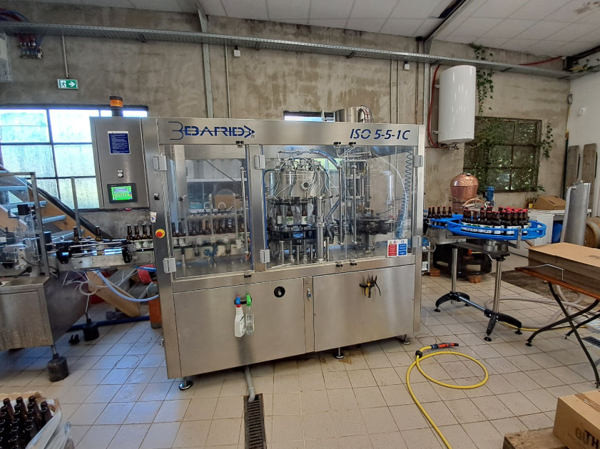

Cinquième semestre
Innover, produire, contrôler en science des aliments
Mobiliser des compétences transversales sur cinq sous-éléments indépendants : gestion d'une situation d'urgence environnementale, audit qualité, nettoyage et désinfection d'un équipement, Lean management, et apport nutritionnel d'une ration alimentaire.
Rédaction de procédures d'urgence ICPE, stratégie de nettoyage Worst Case et méthode TACT sur une soutireuse industrielle, bilan nutritionnel détaillé et Nutri-Score d'une ration alimentaire réelle.
Ce qui m'a marqué dans cette SAé, c'est le grand écart entre les sujets traités dans le même semestre : un jour on rédige des procédures d'urgence pour une serre, le lendemain on calcule l'alcoolémie théorique d'un repas, et la semaine suivante on valide un protocole de nettoyage industriel. Chaque sous-élément demande une rigueur et un vocabulaire différents, et c'est justement ce qui en fait un bon entraînement avant l'entrée dans le monde professionnel — on n'y traite jamais un seul type de problème à la fois.

Visite virtuelle de l'autoclave de la Halle de Pixérécourt
Concevoir, pour la Halle alimentaire de Pixérécourt (EPL54), un outil pédagogique immersif en réalité virtuelle permettant de comprendre les phénomènes physiques et microbiologiques d'un traitement thermique en autoclave.
Visites de terrain et manipulation réelle de l'autoclave, scénarisation en tronc commun + ramification par recette, montage vidéo sous CapCut, production immersive sur H5P via ARCHE, ajout de sous-titres pour l'accessibilité.
C'est la première fois qu'on travaillait pour un vrai client extérieur, avec ses propres délais et ses propres contraintes — et ça change complètement la façon de gérer un projet par rapport à un simple TP entre étudiants. Le moment le plus marquant a été de devoir changer complètement d'outil en cours de route, l'ancien logiciel n'étant plus accessible : on a dû repenser toute notre stratégie technique, en perdant en interactivité par rapport à ce qu'on avait imaginé au départ. Ça a été frustrant sur le moment, mais ça nous a appris à nous adapter vraiment, pas juste sur le papier.